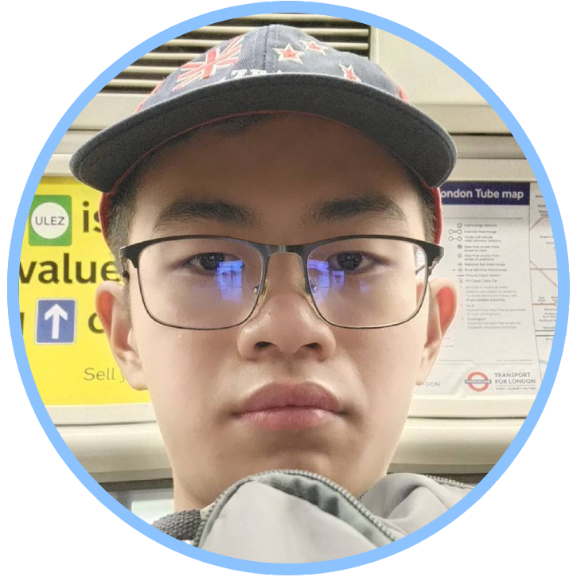

About Me 
Hey, there! My name goes by Saksit Wetwitayaklang. I'm a Saint Gabriel's College graduate and currently a freshman at King Mongkut's University of Technology Thonburi (KMUTT, for short), majoring in computer engineering in pursuit of a future career in the circles of cybersecurity (or perhaps artificial intelligence—I'm still quite ambivalent and vague about my life goals).
I figure my personality could be hard to approach sometimes. Many people tend to find me as a cheerful and phlegmatic individual, and as an introvert, I'm quite reserved and unsociable, which more or less makes finding new friends and engaging in a verbal conversation quite challenging. Moreover, I'm pretty much known among my highschool friends to be exceptionally assiduous when it comes to anything academic, so it is rather common to see me spending most of my leisure doing exercises or finishing up the assignments, especially within the day when they were given.
Talking about skills, many people often commend me for my English fluency. Although speaking in English isn't my strongest suit, I consider my writing skill to be comparable to that of a native speaker—believe me when I told me that I'm currently working on writing projects of my own for recreational purposes in my spare time!
I also have some experiences coding Python. Thanks to my fast learning attribute, I was able to self-study on how to do it via YouTube courses, know the fundamentals of algorithm, write some rudimentary programs, and everything in between.
Another skill I have that is less prominent is art—people tend to say that I'm decent at drawing, but I figure I still have plentiful room for improvements.
As a man of diverse interests, I bear a particularly keen passion for English language is one of them. It's the very thing that I've been consistently learning and perfecting my fluency and usability skill for my whole life—so much that had become an inalienable part of my life. Inhale in English, exhale in English. Laugh in English, cry in English.
I also have a passion for art. I find drawing random things uplift my mental wellness and the means to cope with life whenever I feel down in the dump. Nonetheless, I don't really do as frequently as I did in highschool—since the university life had come around, I had to start refocusing on my academic life and giving less priorities on frivolous activities. It makes me a tad jealous of how productive professional artists could be—I've seen so many art pieces on the Internet, and it always fascinates as to how they could possibly milk so many quality contents at a given amount of time.
Needless to say, technological wonders are also one of those things that never fails to pique my inquisitiveness and inspire me the urge to learn more and more about them. Just imagine the number of possibilities our humanity could be able to obtain and benefit from their ever-improving technological advancements, especially in the field of computer engineering. It could be frustrating at times when things don't go in accordance with my expectation, like when I am trying to code something, but it is always enjoyable discovering new approaches in tackling certain problems and refining the programs little by little until the final product lives up to my satisfaction. I don't know whether other people share this feeling with me, but seeing things I have been toiling my fingers to bones progessively all coming together gives me indescribable amount of pleasure and motivation in continuing working on said things.
Suppose that you're looking forward to contacting me, one way or another, I'd like to make it clear that I am not uncomfortable whatsoever with giving away my contacts, even links to my social media accounts, to anybody unless it was compulsory for work or education, and I would only give them to people I would most likely talk to in person. I'm a pretty private person, and considering how disingenuous and unscrupulous humans are these days, especially in cyberspace, I couldn't help but be anxious about my online privacy and information security. I sincerely hope you understand and respect my concerns.
Regardless, here's my university e-mail address on the off chance there was anything absolutely necessary to contact me about: saksit.wetw@kmutt.ac.th
I figure my personality could be hard to approach sometimes. Many people tend to find me as a cheerful and phlegmatic individual, and as an introvert, I'm quite reserved and unsociable, which more or less makes finding new friends and engaging in a verbal conversation quite challenging. Moreover, I'm pretty much known among my highschool friends to be exceptionally assiduous when it comes to anything academic, so it is rather common to see me spending most of my leisure doing exercises or finishing up the assignments, especially within the day when they were given.
Talking about skills, many people often commend me for my English fluency. Although speaking in English isn't my strongest suit, I consider my writing skill to be comparable to that of a native speaker—believe me when I told me that I'm currently working on writing projects of my own for recreational purposes in my spare time!
I also have some experiences coding Python. Thanks to my fast learning attribute, I was able to self-study on how to do it via YouTube courses, know the fundamentals of algorithm, write some rudimentary programs, and everything in between.
Another skill I have that is less prominent is art—people tend to say that I'm decent at drawing, but I figure I still have plentiful room for improvements.
As a man of diverse interests, I bear a particularly keen passion for English language is one of them. It's the very thing that I've been consistently learning and perfecting my fluency and usability skill for my whole life—so much that had become an inalienable part of my life. Inhale in English, exhale in English. Laugh in English, cry in English.
I also have a passion for art. I find drawing random things uplift my mental wellness and the means to cope with life whenever I feel down in the dump. Nonetheless, I don't really do as frequently as I did in highschool—since the university life had come around, I had to start refocusing on my academic life and giving less priorities on frivolous activities. It makes me a tad jealous of how productive professional artists could be—I've seen so many art pieces on the Internet, and it always fascinates as to how they could possibly milk so many quality contents at a given amount of time.
Needless to say, technological wonders are also one of those things that never fails to pique my inquisitiveness and inspire me the urge to learn more and more about them. Just imagine the number of possibilities our humanity could be able to obtain and benefit from their ever-improving technological advancements, especially in the field of computer engineering. It could be frustrating at times when things don't go in accordance with my expectation, like when I am trying to code something, but it is always enjoyable discovering new approaches in tackling certain problems and refining the programs little by little until the final product lives up to my satisfaction. I don't know whether other people share this feeling with me, but seeing things I have been toiling my fingers to bones progessively all coming together gives me indescribable amount of pleasure and motivation in continuing working on said things.